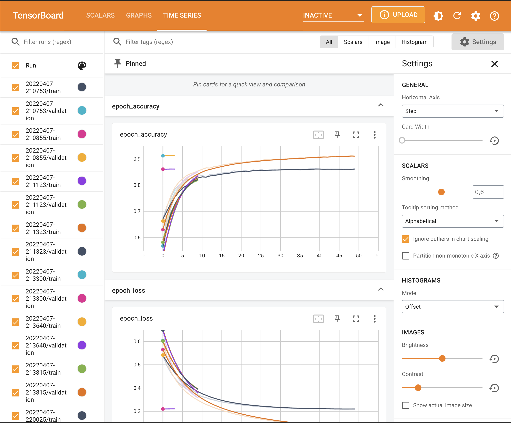

IMDB Sentiment analysis
Contents
IMDB Sentiment analysis#
This tutorial is based on An Introduction to Keras Preprocessing Layers by Matthew Watson, Text classification with TensorFlow Hub: Movie reviews and Basic text classification by TensorFlow.
Main topics in this tutorial:
Build a binary sentiment classification model with keras
Use keras layers for data preprocessing
Use TensorBoard to view model results
Save and reload the model
Example for multiple feature engineering steps
Prerequisites#
To start this tutorial, you need the following setup:
Install TensorFlow (Note that we install TensorFlow Extended to obtain more deployment options. However, we don’t use the options in this tutorial)
Setup#
import tensorflow as tf
from tensorflow import keras
import tensorflow_datasets as tfds
from tensorflow.keras import layers
from tensorflow.keras import losses
from keras.models import load_model
from tensorboard import notebook
import matplotlib.pyplot as plt
import datetime
print("Version: ", tf.__version__)
# Load the TensorBoard notebook extension
%load_ext tensorboard
Data#
We use the IMDB dataset with 50,000 polar movie reviews (positive or negative)
Training data and test data: each 25,000
Training and testing sets are balanced (they contain an equal number of positive and negative reviews)
The input data consists of sentences (strings)
The labels to predict are either 0 or 1.
Data import#
We use 3 data splits: training, validation and test data
Split the data into 60% training and 40% test
Split training into 60% training and 40% validation
Resulting data split:
15,000 examples for training
10,000 examples for validation
25,000 examples for testing
train_ds, val_ds, test_ds = tfds.load(
name="imdb_reviews",
split=('train[:___%]', 'train[___%:]', 'test'),
as_supervised=True)
Explore data#
Each example is a sentence representing the movie review and a corresponding label.
The sentence is not preprocessed in any way.
The label is an integer value of either 0 or 1
0 is a negative review
1 is a positive review.
Let’s print first 2 examples.
for x, y in train_ds.take(___):
print("Input:", x)
print(50*".")
print("Target:", y)
print(50*"-")
Data preprocessing#
First, we need to decide how to represent the text data
TextVectorization#
We will be working with raw text (natural language inputs)
So we will use the
TextVectorizationlayer.It transforms a batch of strings (one example = one string) into either a
list of token indices (one example = 1D tensor of integer token indices) or
dense representation (one example = 1D tensor of float values representing data about the example’s tokens).
TextVectorizationsteps:
Standardize each example (usually lowercasing + punctuation stripping)
Split each example into substrings (usually words)
Recombine substrings into tokens (usually ngrams)
Index tokens (associate a unique int value with each token)
Transform each example using this index, either into a vector of ints or a dense float vector.
Multi-hot encoding#
Multi-hot encoding: only consider the presence or absence of terms in the review.
For example:
layer vocabulary is [‘movie’, ‘good’, ‘bad’]
a review read ‘This movie was bad.’
We would encode this as [1, 0, 1]
where movie (the first vocab term) and bad (the last vocab term) are present.
Create a
TextVectorizationlayer with multi-hot output and a max of 2500 tokensMap over our training dataset and discard the integer label indicating a positive or negative review (this gives us a dataset containing only the review text)
adapt()the layer over this dataset, which causes the layer to learn a vocabulary of the most frequent terms in all documents, capped at a max of 2500.
Adaptis a utility function on all stateful preprocessing layers, which allows layers to set their internal state from input data.Calling adapt is always optional.
For TextVectorization, we could instead supply a precomputed vocabulary on layer construction, and skip the adapt step.
text_vectorizer = layers.TextVectorization(
output_mode='____',
max_tokens=___
)
features = train_ds.map(lambda x, y: x)
text_vectorizer.____(features)
Next, we define a preprocessing function
This is especially useful if you combine multiple preprocessing steps
Here, we only use one step:
preprocessconverts raw input data to the representation we want for our model
def preprocess(x):
return ____(x)
Model#
Architecture#
inputs = keras.___(shape=(1,), dtype='string')
outputs = layers.___(1)(___(___))
model = keras.Model(___, ___)
Compile#
model.compile(
optimizer='adam',
loss=losses.BinaryCrossentropy(from_logits=True),
metrics=['___']
)
Show model summary
model.___()
Let’s visualize the topology of the model
keras.utils.plot_model(model, "sentiment_classifier.png")
keras.utils.plot_model(model, "sentiment_classifier_with_shape_info.png", show_shapes=True)
Training#
We can now train a simple model on top of this multi-hot encoding.
First, we set up TensorBoard and an early stopping rule:
Define the directory where TensorBoard stores log files (we create folders with timestamps by using
datetime)We add
keras.callbacks.TensorBoardcallback which ensures that logs are created and stored.To prevent overfitting, we use a callback wich will stop the training when there is no improvement in the validation accuracy for three consecutive epochs.
# Create TensorBoard folders
log_dir = "logs/fit/" + datetime.datetime.now().strftime("%Y%m%d-%H%M%S")
# Create callbacks
my_callbacks = [
keras.callbacks.TensorBoard(log_dir=log_dir),
keras.callbacks.EarlyStopping(monitor='val_loss', patience=3),
]
Model training:
Train the model for 10 epochs in mini-batches of 512 samples
We shuffle the data and use a
buffer_sizeof 10000We monitor the model’s loss and accuracy on the 10,000 samples from the validation set.
buffer_size is the number of items in the shuffle buffer. The function fills the buffer and then randomly samples from it. A big enough buffer is needed for proper shuffling, but it’s a balance with memory consumption. Reshuffling happens automatically at every epoch
epochs = ___
history = model.fit(
train_ds.shuffle(buffer_size=___).batch(___),
epochs=___,
validation_data=val_ds.batch(___),
callbacks=___,
verbose=1)
Show number of epochs:
len(history.history['loss'])
Evaluation#
Loss and accuracy#
Show loss and accuracy for test data
results = model.evaluate(test_ds.batch(___), verbose=2)
for name, value in zip(model.metrics_names, results):
print("%s: %.3f" % (name, value))
Create a plot of accuracy and loss over time
model.fit()returns a history object that contains a dictionary with everything that happened during training.
history_dict = history.history
history_dict.keys()
There are four entries: one for each monitored metric during training and validation.
You can use these to plot the training and validation loss for comparison, as well as the training and validation accuracy:
acc = history_dict['accuracy']
val_acc = history_dict['val_accuracy']
loss = history_dict['loss']
val_loss = history_dict['val_loss']
epochs = range(1, len(acc) + 1)
# "bo" is for "blue dot"
plt.plot(epochs, loss, '___', label='Training loss')
# r is for "solid red line"
plt.plot(epochs, val_loss, '__', label='Validation loss')
plt.title('Training and validation loss')
plt.xlabel('Epochs')
plt.ylabel('Loss')
plt.legend()
plt.show()
plt.plot(epochs, acc, 'bo', label='Training acc')
plt.plot(epochs, val_acc, 'r', label='Validation acc')
plt.title('Training and validation accuracy')
plt.xlabel('Epochs')
plt.ylabel('Accuracy')
plt.legend(loc='lower right')
plt.show()
Blue dots represent the training loss and accuracy
Solid red lines are the validation loss and accuracy.
Training loss decreases with each epoch
Training accuracy increases with each epoch.
This is expected when using a gradient descent optimization
It should minimize the desired quantity on every iteration.
TensorBoard#
We use the tensorboard.notebook API:
# Initiate TensorBoard
%tensorboard --logdir /logs/fit
# View open TensorBoard instances
notebook.list()
# If no port is provided, the most recently launched TensorBoard is used
# notebook.display(port=6006, height=1000)

Alternative option to view TensorBoard:
How to use TensorBoard in Visual Studio Code (Stackoverflow):
Open the command palette (Ctrl/Cmd + Shift + P)
Search for the command “Python: Launch TensorBoard” and press enter.
Select the folder where your TensorBoard log files are located:
Select folder
logs/fit
Inference on new data#
Create new example data
examples = [
"The movie was great!",
"The movie was okay.",
"The movie was terrible..."
]
Add a sigmoid activation layer to our model to obtain probabilities
probability_model = keras.Sequential([
___,
layers.Activation('___')
])
Make predictions
probability_model.___(examples)
Save model#
A Keras model consists of multiple components:
The architecture, or configuration, which specifies what layers the model contain, and how they’re connected.
A set of weights values (the “state of the model”).
An optimizer (defined by compiling the model).
A set of losses and metrics (defined by compiling the model or calling add_loss() or add_metric()).
The Keras model saving API makes it possible to save all of these pieces to disk at once, or to only selectively save some of them:
Saving everything into a single archive in the TensorFlow SavedModel format (or in the older Keras H5 format). This is the standard practice.
Saving the architecture / configuration only, typically as a JSON file.
Saving the weights values only. This is generally used when training the model.
We will save the complete model as Tensorflow SavedModel
model.___('imdb_model')
Load model#
model_new = load_model('imdb_model')
model_new.summary()
Multiple feature engineering steps#
The following code is an add on to demonstrate how to perform further feature engineering
Let’s experiment with a new feature
Our multi-hot encoding does not contain any notion of review length
We can try adding a feature for normalized string length.
Create the normalization layer (which will scale the input to have 0 mean and 1 standard deviation)
Adapt it to our input
Within the preprocess function, we simply concatenate our multi-hot encoding and length features together
# This layer will scale our review length feature to mean 0 variance 1.
normalizer = layers.Normalization(axis=None)
normalizer.adapt(features.map(lambda x: tf.strings.length(x)))
def preprocess(x):
multi_hot_terms = text_vectorizer(x)
normalized_length = normalizer(tf.strings.length(x))
# Combine the multi-hot encoding with review length.
return layers.concatenate((multi_hot_terms, normalized_length))
Use the new preprocess function in our model (we don’t use TensorBoard in this example):
inputs = tf.keras.Input(shape=(1,), dtype='string')
outputs = layers.Dense(1)(___(___))
model = tf.keras.Model(inputs, outputs)
model.compile(loss=tf.keras.losses.BinaryCrossentropy(from_logits=True))
epochs = 5
callback = keras.callbacks.EarlyStopping(monitor='val_loss', patience=3)
history = model.fit(
train_ds.shuffle(buffer_size=10000).batch(512),
epochs=epochs,
validation_data=val_ds.batch(512),
callbacks=[callback],
verbose=1)